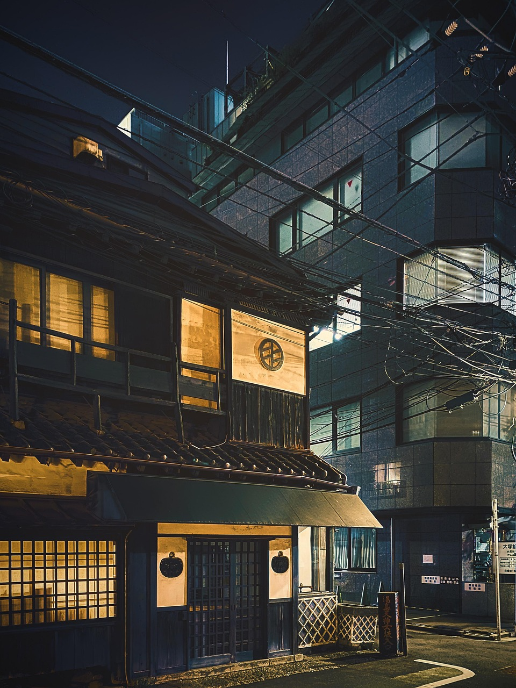
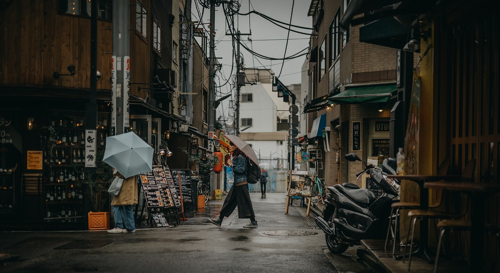

| Demografia | População | 13.960.236 hab |
|---|---|---|
| Densidade populacional | 6.349 hab/km² | |
| Geografia | Área | 2.194 km² |
| País: Japão | ||
| Website | www.gotokyo.org | |

🏙️ 5 Curiosidades sobre Tóquio
- Maior área metropolitana do mundo
- Máquinas de venda por todo o lado
- O cruzamento mais movimentado do mundo
- Comboios com pontualidade extrema
- Tradição e modernidade lado a lado
História / Cultura
- Nome original: Edo (antes de 1868).
- Ano em que se tornou capital do Japão: 1868 (quando mudou de Edo para Tóquio).
- Eventos históricos importantes: Jogos Olímpicos de 1964 e 2021.
- Templo mais famoso: Senso-ji (em Asakusa).

Transportes
- A estação de Shinjuku é a mais movimentada do mundo (cerca de 3,5 milhões de passageiros por dia).
- O metro de Tóquio tem mais de 280 estações.
Espaço 7 (related posts)
Espaço 8 (footer)